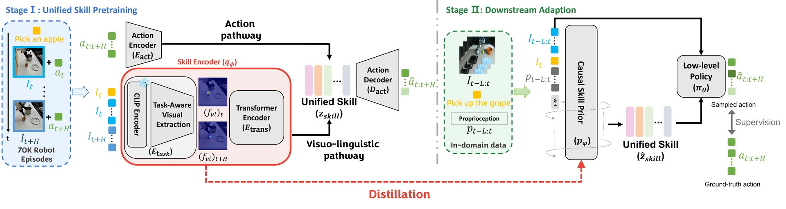
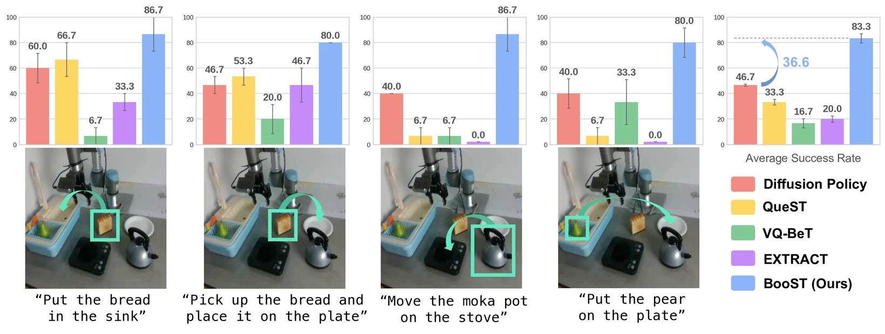
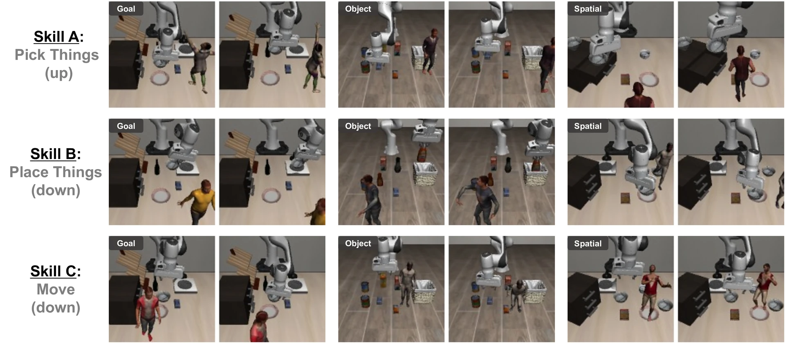
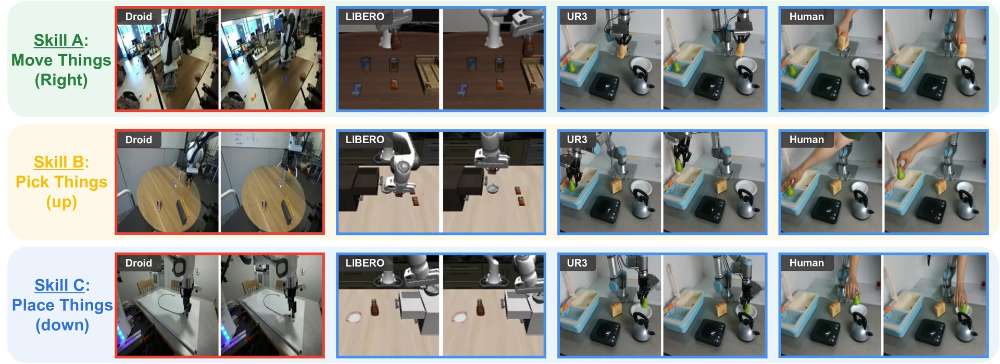

Skill abstraction—the process of learning reusable and temporally extended behaviors—has emerged as a key paradigm for improving sample efficiency and generalization in robot learning. For efficient skill transfer to real robots, learned skills must generalize across tasks and domains, remain robust to visual and dynamic perturbations, and be efficient enough for practical deployment. However, existing methods typically satisfy only a subset of these properties, as they capture either high-level semantic intent (what) or low-level motion dynamics (how). This incomplete skill transfer yields weak priors for policy learning, thereby demanding substantial in-domain data for downstream adaptation. To address these challenges, we introduce BooST, a two-stage framework that explicitly bridges semantics and motions to satisfy all three desiderata. BooST first leverages a cross-modal VQ-VAE to capture both semantic intent and motion dynamics, yielding a unified skill representation. It then distills this representation into a lightweight policy for efficient downstream adaptation to new tasks. Extensive experiments across simulation and real-robot settings demonstrate that BooST achieves superior few-shot adaptation, cross-domain skill transfer, and robustness to dynamic visual distractors, while maintaining a lightweight yet expressive design suitable for real-world deployment.

1 Stage I
A cross-modal VQ-VAE learns a single shared codebook through two pathways. The visuo-linguistic pathway fuses patch-level CLIP ViT tokens with the language instruction via temperature-scaled cross-attention, capturing semantic intent (what). The action pathway encodes action trajectories, capturing motion dynamics (how). The two are optimized alternately so neither dominates the codebook.
The only supervisory signal is action reconstruction — not pixel reconstruction. That choice is what makes the representation ignore visual detail irrelevant to the task, and it is why BooST stays robust when the pretraining data contains moving distractors.
2 Stage II
The pretrained skill encoder is frozen and used as a teacher. Its predicted skills become pseudo-labels for a lightweight causal skill prior, and a small low-level policy is behavior-cloned on top of the sampled skills. A stop-gradient between them keeps the prior supervised solely by the fixed encoder.
Unlike Stage I, this stage sees only past observations, since future frames are unavailable at execution time. Both components are small Transformers trained on a modest in-domain dataset, and the resulting model runs at roughly 60 Hz — fast enough to deploy on a real robot.
BooST outperforms every skill-based baseline on all four LIBERO benchmarks — and the margin grows as demonstrations get scarcer, which is precisely what a good skill prior should do. On LIBERO-90, the most diverse benchmark, the relative gain over the second-best method goes from +41% at 50 demos to +140% at 10.
LIBERO-90 — success rate by number of demonstrations
| Method | 50 demos | 20 demos | 10 demos |
|---|---|---|---|
| Diffusion Policy | 0.60 | 0.33 | 0.24 |
| VQ-BeT | 0.64 | 0.51 | 0.29 |
| QueST | 0.51 | 0.37 | 0.28 |
| LISA | 0.00 | 0.00 | 0.00 |
| EXTRACT | 0.22 | 0.20 | 0.14 |
| BooST (Ours) | 0.91 (+41%) | 0.82 (+59%) | 0.70 (+140%) |
Mean success rate over five seeds, 50 rollouts per task. Relative gain is over the second-best method.
LIBERO-Goal — success rate by number of demonstrations
| Method | 50 demos | 20 demos | 10 demos |
|---|---|---|---|
| Diffusion Policy | 0.56 | 0.47 | 0.41 |
| VQ-BeT | 0.73 | 0.45 | 0.32 |
| QueST | 0.30 | 0.25 | 0.22 |
| LISA | 0.00 | 0.00 | 0.00 |
| EXTRACT | 0.09 | 0.06 | 0.04 |
| BooST (Ours) | 0.92 (+25%) | 0.81 (+74%) | 0.68 (+65%) |
Mean success rate over five seeds, 50 rollouts per task. Relative gain is over the second-best method.
LIBERO-Object — success rate by number of demonstrations
| Method | 50 demos | 20 demos | 10 demos |
|---|---|---|---|
| Diffusion Policy | 0.36 | 0.25 | 0.20 |
| VQ-BeT | 0.36 | 0.32 | 0.16 |
| QueST | 0.11 | 0.06 | 0.08 |
| LISA | 0.00 | 0.00 | 0.00 |
| EXTRACT | 0.88 | 0.69 | 0.51 |
| BooST (Ours) | 0.95 (+8%) | 0.85 (+24%) | 0.80 (+57%) |
Mean success rate over five seeds, 50 rollouts per task. Relative gain is over the second-best method.
LIBERO-Spatial — success rate by number of demonstrations
| Method | 50 demos | 20 demos | 10 demos |
|---|---|---|---|
| Diffusion Policy | 0.74 | 0.50 | 0.42 |
| VQ-BeT | 0.80 | 0.63 | 0.37 |
| QueST | 0.28 | 0.21 | 0.10 |
| LISA | 0.00 | 0.00 | 0.00 |
| EXTRACT | 0.75 | 0.56 | 0.29 |
| BooST (Ours) | 0.91 (+13%) | 0.80 (+27%) | 0.60 (+43%) |
Mean success rate over five seeds, 50 rollouts per task. Relative gain is over the second-best method.
Skills pretrained on a Franka Emika Panda transfer to a UR3 with a different action space, adapting from only five demonstrations per task. Low-level baselines (QueST, VQ-BeT) fail here outright: their skills are tied to the joint-velocity action space they were pretrained on and cannot reach a robot controlled in Cartesian end-effector space.

We pretrain on a LIBERO-90 variant with animated human distractors injected into every episode. Latent-action methods that reconstruct images absorb this background motion into their representation and degrade. BooST counters this with two components: the visuo-linguistic pathway extracts task-relevant visual features conditioned on the instruction, and supervision comes from reconstructing actions rather than pixels. Together these keep the representation focused on the agent's own behavior — what it did rather than what merely moved.
Pretrained with distractors, evaluated on standard LIBERO
| Method | 90 | Goal | Object | Spatial | Avg. |
|---|---|---|---|---|---|
| LAPA | 0.68 | 0.69 | 0.91 | 0.87 | 0.79 |
| UniVLA | 0.62 | 0.49 | 0.90 | 0.80 | 0.70 |
| BooST (Ours) | 0.89 | 0.88 | 0.97 | 0.88 | 0.90 |

Pretrained on distractor-augmented LIBERO-90, evaluated on Goal and Object with unseen distractors present at test time. The encoder keeps selecting the same skill for a given sub-behavior.
Each row is one skill from the shared codebook, executed in four different domains. Semantic intent and motion dynamics stay consistent across visual scenes and embodiments.

Left to right: the source domain (DROID), then LIBERO, the UR3, and a human hand.
@article{boost2026,
title={BOOST: Subtitle Goes Here (TBD)},
author={TBD},
journal={arXiv preprint arXiv:XXXX.XXXXX},
year={2026},
}